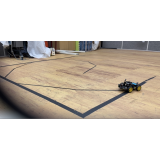

|
I am a combined master`s & doctoral course student in the Lab for Autonomous Robotics Research(LARR) at SNU IPAI, advised by Prof. H. Jin Kim. I received my B.S. degree in Mechanical Engineering at Yonsei University(Cum Laude, ranking 7th out of 141 students). My hobby is dancing(K-POP & Choreography), and I am also interested in magic lately.
Email /
CV /
Google Scholar /
Github |

|
|
|
|
I'm interested in reinforcement learning with uncertainty. Representative papers are highlighted. |
|
| |
|

|
I used MCdropout to complete line tracking under position measure with noise. I used pure pursuit algorithm for line tracking. If you are interested or need any help, please email me. |
|
Website template from Jon Barron |